Actividad 19: Adquisición Forense en Caliente (Live Forensics)
Reporte Ejecutivo Original
Documentación técnica// Extensión: .docx
Orden de Volatilidad
La adquisición en un sistema vivo (Live Forensics) debe realizarse minimizando la pérdida de datos. Se comienza recopilando la información más volátil (hora actual, procesos en RAM, servicios, sesiones, caché DNS y ARP, y el historial de comandos) y se concluye con elementos persistentes (configuración de red, tareas programadas, logs del sistema, hosts y sistema de archivos).
Resumen de la Evidencia
No se identificaron indicadores obvios de actividad maliciosa en ejecución o conexiones directas a servidores C2, sin embargo, se detectaron elementos críticos que amplían la superficie de ataque y requieren revisión: adaptadores de software VPN virtuales (Radmin VPN, Tailscale, OpenVPN), servicios NetBIOS sobre TCP/IP habilitados y procesos de terceros escuchando puertos locales.
Hallazgos Principales (Triage)
| Hallazgo | Evidencia y Comandos | Valoración Forense |
|---|---|---|
| Una sola cuenta activa | Samlogo10, sesión local en consola; último inicio 12:04 (NetUsers.exe y query user) | Normal |
| Equipo independiente | Grupo de trabajo WORKGROUP; sufijo DNS vacío (ipconfig /all y nbtstat -n) | Informativo |
| Adaptadores VPN Virtuales | Radmin VPN, Tailscale y OpenVPN (ipconfig /all y sc query) | Revisar uso y origen |
| NetBIOS habilitado | Nombres registrados en las VPN y puerto 139 TCP abierto (nbtstat -n, netstat) | Reducir exposición |
| Puertos de terceros a la escucha | lkads.exe, nisvcloc.exe, SystemWebServer.exe, ApplicationWebServer.exe (netstat -anob) | Verificar ruta y firma |
| Sin conexiones externas (C2) | Solo ESTABLISHED en loopback (127.0.0.1); sin unidades mapeadas (netstat -an y net use) | Revisar el resto de la salida |
| Recursos compartidos | Solo recursos administrativos C$, D$, IPC$ y ADMIN$ (net share) | Normal |
| Archivo hosts y tareas | Hosts sin redirecciones activas; tareas de actualización de software conocido (schtasks) | Sin anomalías visibles |
| Wifi inactivo | Servicio wlansvc detenido (netsh wlan show profiles) | Limitación física/sistema |
Documentación de la Adquisición Forense (20 Puntos)
Fase A. Entorno de Ejecución (Procesos y Servicios)
Punto 1. Fecha y hora del sistema
Se usó echo %date% %time% para anclar temporalmente la evidencia recolectada (15/11/2026 13:47:05.96) y correlacionarla con registros de eventos y tiempos de arranque.
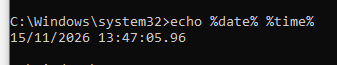
Punto 2. Procesos en ejecución
El comando tasklist /v | more listó los procesos, PIDs, y sesiones. Se validó que los procesos base de Windows operen bajo las cuentas legítimas (SYSTEM/NETWORK SERVICE) en la sesión 0 o 1, sin anomalías de suplantación visibles.
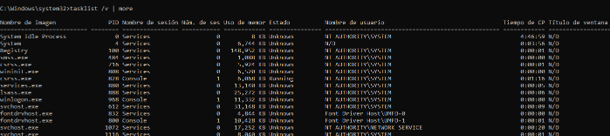
Punto 3. Servicios: Símbolo del Sistema vs PowerShell
Se contrastó sc query state= all | more con Get-Service. SC aportó detalles técnicos (códigos de salida, estados de detención) mientras que Powershell permitió listar rápidamente servicios de terceros activos (OpenVPN, Battle.net).
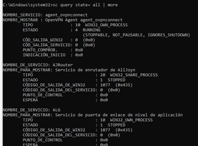
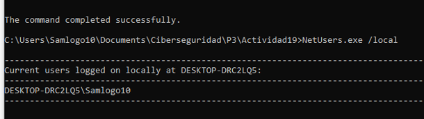
Fase B. Auditoría de Identidades (Usuarios)
Punto 4. Usuarios con sesión activa
Utilizando la herramienta de terceros NetUsers.exe /local y el comando nativo query user, se confirmó que existe una sola sesión interactiva en la consola física (samlogo10) sin conexiones de red remotas como RDP activas.
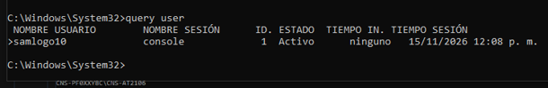
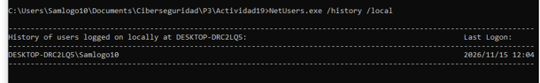
Punto 5. Usuarios que han iniciado sesión
Con el comando NetUsers.exe /history /local se determinó que la única cuenta registrada históricamente es "Samlogo10", sin registros de otros administradores o cuentas clandestinas logueadas localmente.
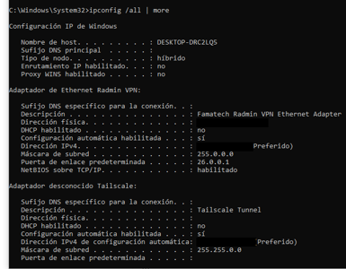
Fase C. Topología, Caché DNS y Conexiones (Net)
Punto 6 y 7. Interfaces, IP y Nombres NetBIOS
Se usó ipconfig /all | more revelando adaptadores de VPN inusuales (Radmin, Tailscale). Luego, nbtstat -n comprobó que los nombres NetBIOS estaban siendo anunciados en dichas interfaces virtuales (incrementando riesgo de descubrimiento lateral).
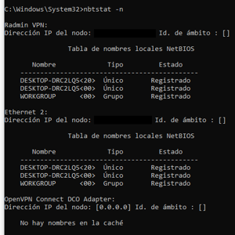
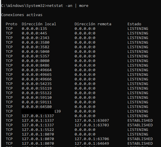
Punto 8 y 9. Puertos Abiertos y Propiedad de Procesos
Con netstat -an | more se revisó el estado, hallando únicamente conexiones ESTABLISHED en loopback. Al usar netstat -anob se vincularon puertos críticos en escucha con procesos de terceros no nativos de Windows, como lkads.exe y SystemWebServer.exe.
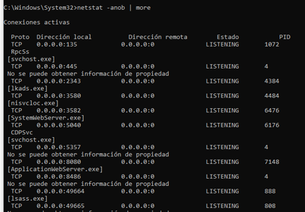
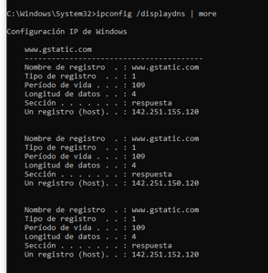
Punto 10 y 11. Caché DNS y Tabla ARP
ipconfig /displaydns expuso resoluciones recientes (gstatic.com). Al mismo tiempo, arp -a no mostró entradas dinámicas activas de otros equipos vecinos en la LAN, sólo resoluciones multicast estándar.
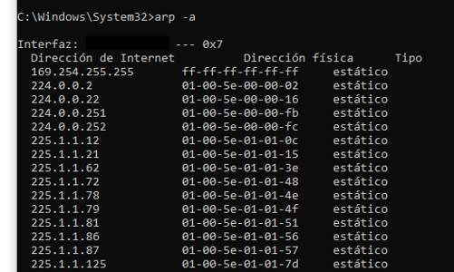
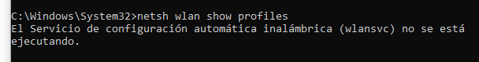
Punto 12, 14 y 15. WLAN y Recursos Compartidos
El comando netsh wlan show profiles falló debido a que el servicio wlansvc estaba detenido (sin hardware WiFi activo). net use confirmó que no hay unidades de red mapeadas para movimiento lateral, y net share mostró exclusivamente recursos administrativos por default.
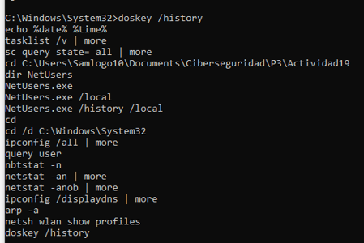
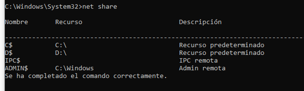
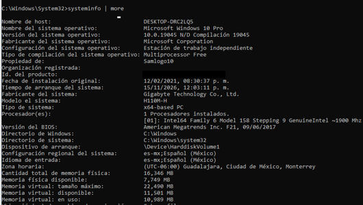
Fase D. Persistencia, Auditoría y Archivos
Punto 13 y 16. Historial de Comandos e Info de Host
El comando doskey /history capturó todos los comandos ingresados (crucial para auditar lo que el forense o un atacante en sesión hayan tecleado). systeminfo verificó hardware, que el sistema era un nodo independiente, y las métricas exactas del tiempo de uptime.
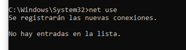
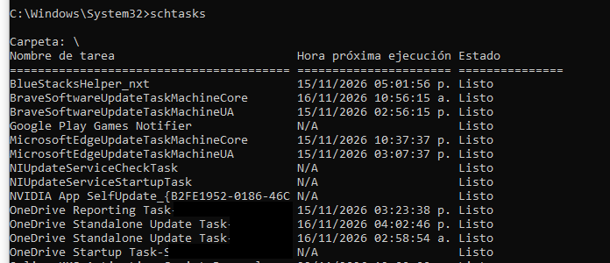
Punto 17 al 20. Tareas, Exportación de Logs, Hosts y Ficheros
schtasks reveló sólo actualizadores legítimos. Se exportó el archivo de auditoría local utilizando wevtutil epl System al escritorio. Se leyó el archivo de enrutamiento hosts sin advertir inyecciones, y se generó un listado recursivo dir /t:c /o:d para mapear la línea de tiempo de creación de carpetas clave.
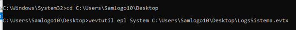
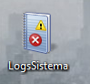
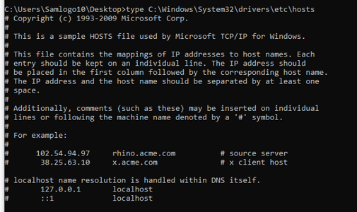
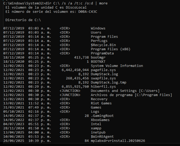